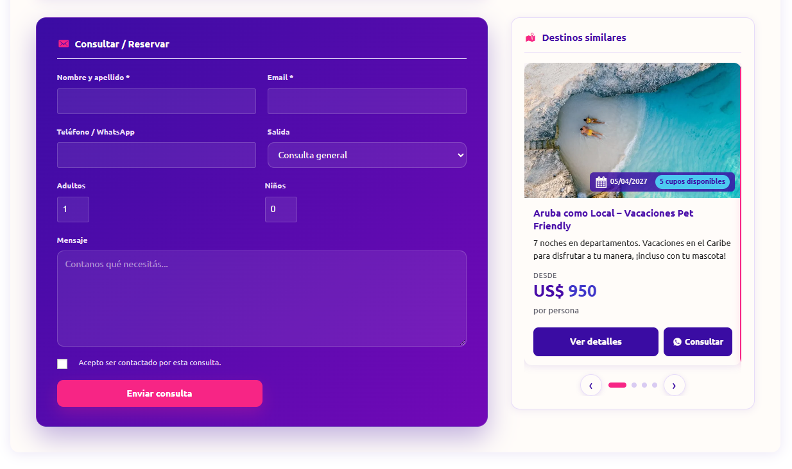
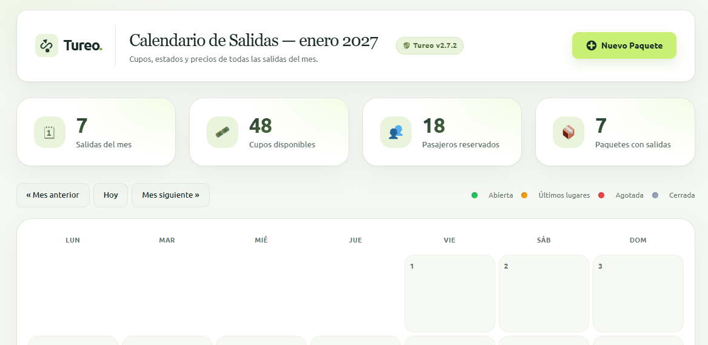
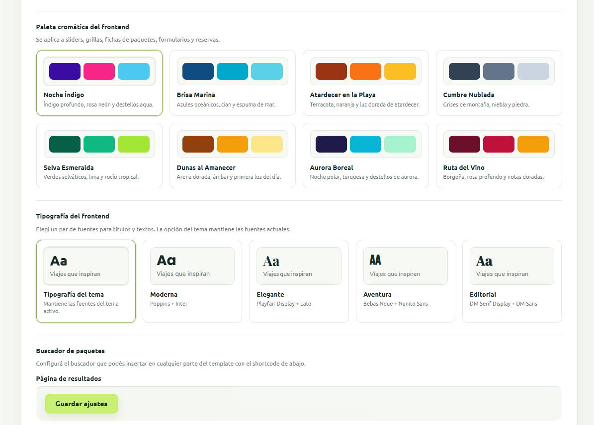

Todo en un lugar
Fotos, fechas, precios y detalles del viaje juntos en una ficha clara.
Para agencias de turismo
Dales un lugar propio, claro y fácil de recorrer. Con Tureo, tus paquetes viven en tu web y tus clientes pueden consultar sin vueltas.
Vos seguís compartiendo en redes.
Tu web hace el resto.
JUJUY Y SALTA · 7 NOCHES
Tu trabajo ya tiene suficientes idas y vueltas
Una historia desaparece. Un mensaje se mezcla con otros. Y cada persona vuelve a preguntar lo mismo.
Con Tureo, compartís un enlace con toda la información del paquete, en un formato que se entiende y se puede consultar desde cualquier dispositivo.
Fotos, fechas, precios y detalles del viaje juntos en una ficha clara.
Un catálogo organizado por destinos, con búsqueda y filtros.
Un botón lleva al viajero a escribirte por WhatsApp desde cada paquete.
Simple para vos. Claro para tus clientes.
Tu equipo administra los paquetes desde WordPress. La gente los recorre desde tu web y te consulta cuando encuentra el suyo.
Sumá fotos, descripción, precios, fechas, itinerario y lo importante de cada propuesta.
Elegí qué destacar y cómo presentar el catálogo. Se adapta a celulares y computadoras.
Cada viajero puede contactarte por WhatsApp o enviar una consulta desde la ficha.
Todo conectado en un solo lugar
Desde la carga del paquete hasta la consulta del viajero, Tureo reúne tareas que suelen quedar repartidas entre publicaciones, planillas y mensajes.
01 · CONTENIDO
Reuní descripción, galería de fotos, itinerario por día, datos técnicos, ubicación y enlaces de video en la página de cada paquete.
02 · OPERACIÓN
Organizá tarifas por pasajero, monedas, salidas y disponibilidad. Consultá las fechas en el calendario y mantené los cupos al día.
03 · CATÁLOGO
Clasificá por destino, tipología y tipo de viaje; mostrá paquetes destacados, ordená el catálogo y ofrecé búsqueda con sugerencias.
04 · CONSULTAS
Facilitá el contacto por WhatsApp o formulario. Si activás el módulo opcional, también podés registrar y administrar reservas desde WordPress.
05 · TU MARCA
Elegí paletas y combinaciones tipográficas para integrar las grillas, fichas, formularios y módulos con la identidad visual de tu agencia.
06 · PUBLICACIÓN
Insertá sliders, grillas, catálogos y buscadores con shortcodes. Cada paquete tiene su propia página para compartir desde tu web.
Capturas reales del plugin
Un vistazo a las pantallas de catálogo, gestión de salidas y personalización. La presentación puede variar según la configuración y el tema de cada sitio.

La ficha reúne el formulario de consulta, la salida seleccionada, los datos del paquete y sugerencias de destinos similares.

Revisá salidas del mes, cupos disponibles y pasajeros reservados desde una vista operativa centralizada.

Configurá la apariencia del catálogo y elegí qué opciones de búsqueda estarán disponibles para tus visitantes.
Se integra a tu sitio WordPress
Los módulos se agregan en páginas o entradas con shortcodes. Podés armar una portada con destacados, un catálogo para explorar toda la oferta y un buscador que lleve a los resultados configurados.
Consultanos cómo integrarlo[tp_slider limit="5"]Un slider para destacar paquetes seleccionados.[tp_grid destacados="true" columns="3"]Una grilla de paquetes destacados.[tp_catalogo]Un catálogo con opciones de exploración y filtros.[tp_buscador]Un buscador para ubicar en la página que elijas.Los parámetros disponibles permiten ajustar la cantidad, el orden y los criterios de visualización.
Gestión desde el panel
Creá y actualizá paquetes desde WordPress, organizá la información y elegí dónde aparece. Los cambios se reflejan en los módulos donde se muestra cada paquete.
Lo vemos juntos en una demoDefiní campos personalizados para sumar información propia de tu operación.
Configurá títulos y descripciones SEO para las fichas de paquetes.
Exportá e importá datos de paquetes para facilitar su traslado o respaldo.
Administrá consultas y reservas desde WordPress; el módulo de reservas se puede activar o desactivar.
Antes de empezar
En la demo podemos revisar tu sitio, el flujo de trabajo de tu equipo y qué módulos te conviene usar.
Tureo se integra en un sitio WordPress existente mediante sus módulos. La apariencia depende del tema y de la configuración; en la demo podemos revisar cómo encaja en tu web.
No. El módulo es opcional. Podés usar las fichas y recibir consultas por WhatsApp o formulario sin gestionar reservas dentro del plugin.
Se insertan shortcodes en las páginas donde quieras mostrar sliders, grillas, catálogo o buscador. Tureo incluye una guía con ejemplos y opciones.
Además de los campos del paquete, podés definir campos personalizados para agregar datos que sean importantes para tu forma de trabajar.
Un buen viaje empieza con una buena charla
Te muestro cómo se vería Tureo en tu agencia y resolvemos tus dudas, sin compromiso.
Quiero coordinar una demo La demo es por Google Meet. Coordinamos el horario por WhatsApp.